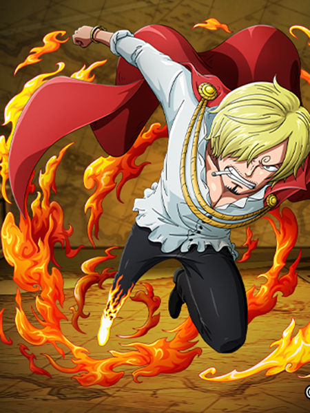

Sanji Vinsmoke (ヴィンスモーク・サンジ, Vinsumōku Sanji), plus connu sous le nom de Sanji (サンジ, Sanji) la Jambe Noire, est un personnage de fiction de la franchise médiatique One Piece créée par Eiichirō Oda. Membre de l'équipage de Monkey D. Luffy, il occupe la place de cuisinier en son sein.
voix japonaise :Hiroaki Hirata
voix francaise :Olivier Cuvellier
fruit du demon :aucun (Style de la Jambe Noire)
prime :330 milLions berry
